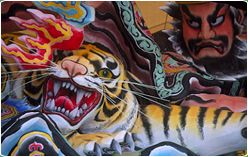

|
the nebuta at The British Museum Between 14 November and 18 December 2001, a nebuta will be built in the Wellcome Trust Gallery at The British Museum. Come and watch the artists at work or monitor the construction online! Nebuta are giant lanterns, dramatic sculptural scenes illuminated by hundreds of light-bulbs and paraded through the streets of Aomori in northern Japan every August. The exhibition at The British Museum will privilege the artistic process involved in the construction of the floats. Over these four weeks, the 12th century warrior Minamoto no Yoshitsune, crossing the sea with his horse, will gradually rise from a pile of timber and wire forms. This is the theme taken from a local legend about the historical hero, which the artist Takashi Kitamura has chosen to illustrate at The British Museum for its parallels with the voyage of the nebuta artists crossing the seas to the UK to construct the festival float in The British Museum. Takashi Kitamura will lead a team of ten people from Aomori as each of them arrive in London to carry out different aspects of the construction. Also on display is a detail from another nebuta: the head from the float that was built in 1991 by Susumu Ishiya for the UK-wide Japan Festival and which was later donated to the Museum. Indeed, this was the start of a joint programme between The British Museum Department of Ethnography and Aomori City, leading to this new exhibition as part of The British Museum's contribution to Japan 2001. This exhibition was made with the support of Aomori City and in association with The Daiwa Anglo-Japanese Foundation, Japan 2001 and Blackwall Green. |

|